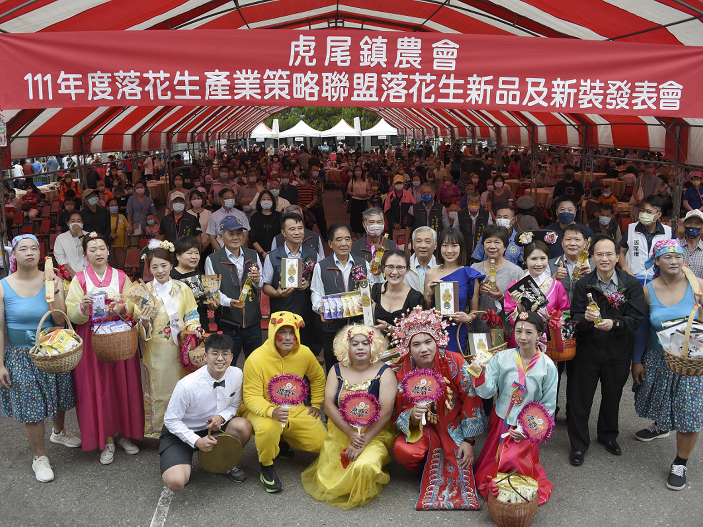
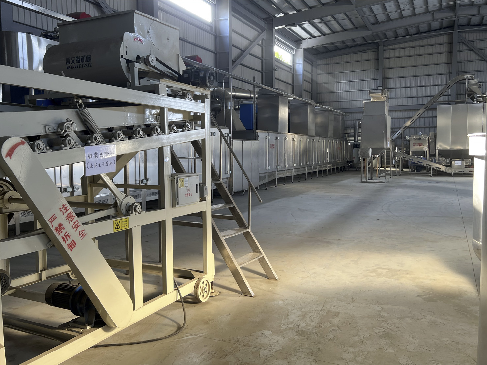
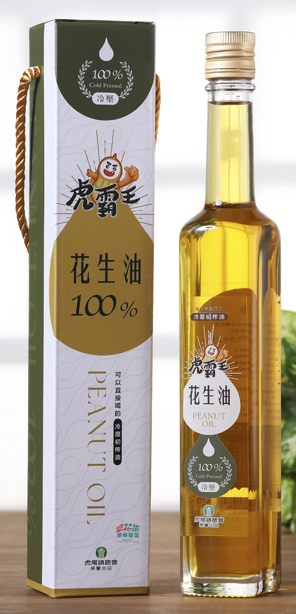

花生策略聯盟新品新裝發表會（圖／農糧署）

落花生乾燥中心乾燥機具（圖／農糧署）

開發花生加工新品（圖／農糧署）
由於 111 年國內一期作花生產量不足，導致花生價格暴漲，除了國外貿易商暫時停止出口外，國內高昂的花生售價也不支持，將本已不足的花生用於出口。
推廣落花生新品、共同品牌打亮國產履歷花生及研發具地方特色伴手禮等行銷國產落花生量約 250 公噸。
以農民契作產銷履歷花生加工成花生莢果、花生仁、花生油等加工產品，使用加工落花生原料約 300 公噸。
1. 設立原原種圃及原種圃面積達26.83 公頃，優質種子產量約80,490 公斤，推廣面積約 268.3公頃。
2. 辦理講習會與觀摩會 2 場。
3. 推廣落花生代乾燥示範 12 公噸。
4. 研發伴手禮 1 式。
5. 開發新品及改善包裝 4 項。
6. 花生新品及新裝發表會 1 場。
7. 花生策略聯盟產品推廣 6 場。
8. 花生食農教育及產品巡迴展示 5 場。